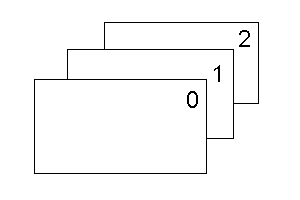

When indexed text, objects of the same type are
arranged in the Z order, starting from the front.
When indexed, the front object becomes 0, and the remaining become 1, 2, etc.

After finishing entering all text, correctly specify the Z
order.
Starting with the last text (or Arrange Text) object
entered, select [Layout] – [Order] – [Bring to Front] (Ctrl+F) for each object
in order.
This operation brings the first entered text to the front.
To check the Z order with P-touch Editor, perform either of the following
operations.
- [Text Box] command
With the [Text Box] command, objects containing text are arranged in order,
starting with the object at the front.
- Show Order tab of the side bar (Professional
mode in P-touch Editor Version 5)
In the Show Order tab, objects are listed, in order, with the front object at
the top.